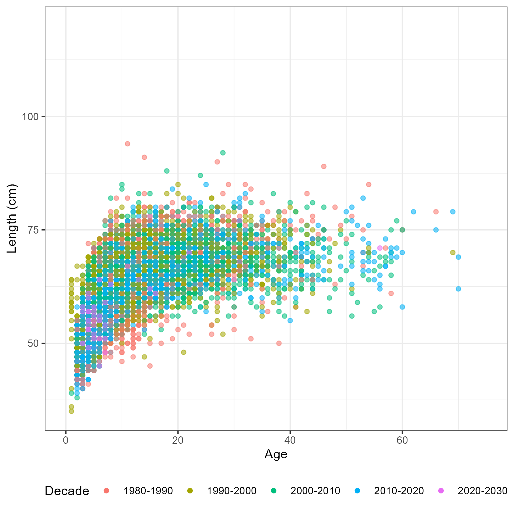
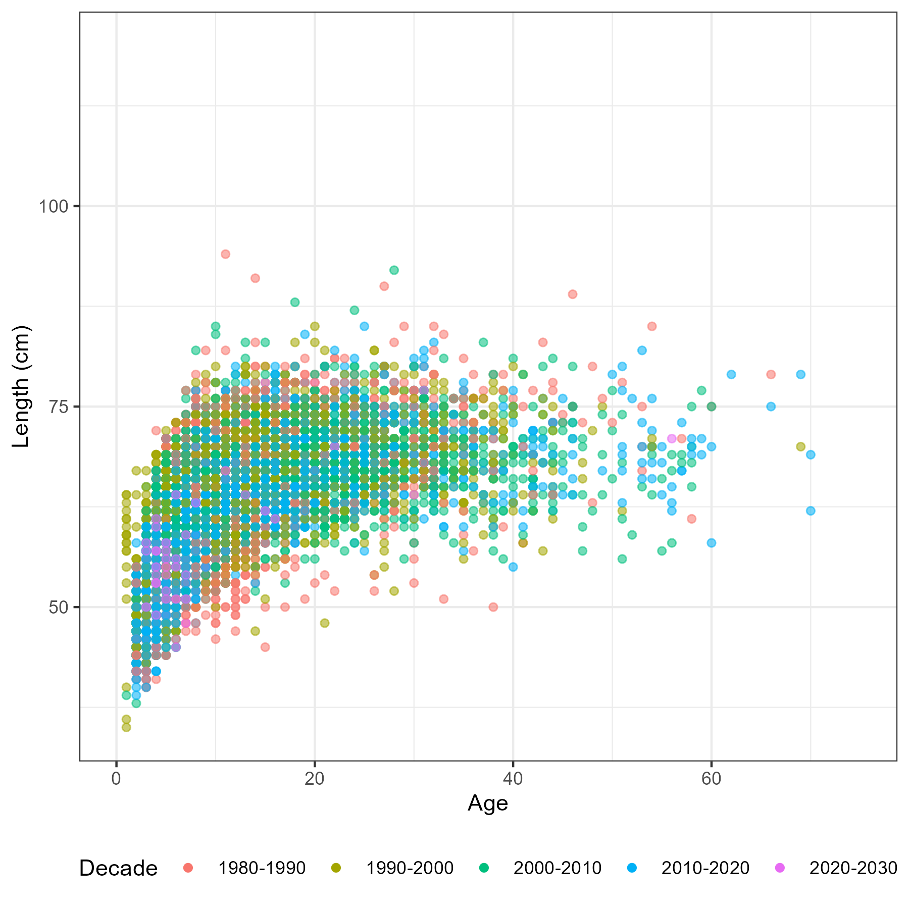

Chapter 5 Survey data
This chapter explores and describes survey age, length and catch rate data to inform the following spatial model decisions
- Is there spatial differences in age or length composition?
- Is there spatial differences in relative abundance?
- Is there spatial differences growth?
Survey design
The longline survey in the Gulf of Alaska and Bering Sea began in 1978-79 and is fixed station systematic design (Sasaki 1985). “Survey stations are distributed as uniformely as possible in each geographic area. One station per day is fished, and normally 160 hachis/skates are fished at each station. The longline is set at right angles to the isobars in a manner to cover the depth range of 101- 1,000 m. However, the distance between 101 and 1,000 m varied at each survey station. Thus, this complete depth range could not be covered at stations where this distance exceeded the 16 km length of the longline gear. The longline was usually set from shallow to deep waters and was retrieved in the same direction. Hauling the longline started 2 hours after the set was completed.” pg 68 Sasaki (1985)
Each hachi is assigned to a depth stratum which is treated as an independent observation by stratified estimators to generate population estimates and associated variance (Is this right? seems inappropriate given all these hachi are essentially a cluster from a single fishing event)
Abundance (catch rate) data
A geostatistical model-based estimator was used to estimate spatial estimates of abundance. sdmTMB (Anderson et al. 2022) was the package used for this exercise. Geostatistical models require spatial locations to be known for all observations. A limitation of using hachi level data is latitude and longitude is only known for the whole longline event (e.g., all hachi on the same line have the same spatial coordinates). For each longline event we summed over all hachi. Survey abundnace pooled over 50km x 50km grid cells is shown in Figure 5.1.
Figure 5.1: A time-series of sablefish catch from the long line survey pooled over 50km by 50km grided cells
A range of covariates, spatio-temporal and likelihood assumptions were considered in the geostatistical analysis. Two covariates that were forced in the model whether they were statistically significant or not was Year and country. There has been documented difference between Japanese and NMFS sampling relating to hook and ganion construction (Kimura and Zenger Jr 1997).
Given the unusual shape of the coast for the region, an boundary was created to avoid spatial regions in the Bearing sea sharing information with CGOA and EGOA. The mesh assumed in models that has spatial random effects but not spatio-temporal random effects is shown in Figure 5.2.
Figure 5.2: Mesh for spatial random effects, red dots indicate station location
The first model was configured using code the follow code chunk.
fit_spatial_tweedie <- sdmTMB(
catch ~ 0 + as.factor(Year) + Country,
family = tweedie(link = "log"),
spatial = "on",
time = "Year",
spatiotemporal = "off",
)This model structure was repeated assuming the Gamma and Lognormal distribtion because there were only 5 records of 4000 that did not catch sablefish strictly positive distributions were only considered. Residuals shown in Figure 5.2
Figure 5.3: Boxplot comparing overall residuals between distributions
| Symbol | Description |
|---|---|
| \(\mathcal{M}_1\) | y ~ year + country + omega |
| \(\mathcal{M}_2\) | y ~ year + country + FMP_region + omega |
| \(\mathcal{M}_3\) | y ~ year + country + epsilon(iid) |
| \(\mathcal{M}_4\) | y ~ year + country + epsilon(ar1) |
where omega is time-invariant Gaussian Field (GF) and epsilon is time-varying GF
| model | Gamma | Lognormal | Tweedie | n_params |
|---|---|---|---|---|
| M1 | 2865.55 | 3404.42 | 2199.97 | 48 |
| M2 | 2848.87 | 3378.63 | 2183.28 | 52 |
| M3 | 2737.73 | 3229.85 | 1970.40 | 49 |
| M4 | 2581.64 | 3021.01 | 1778.05 | 50 |
Figure 5.4: Spatial predition M1 with the tweedie distribution.
Figure 5.5: Comparison of indicies for the Tweedie distribution and the three model structures.
Figure 5.6: Spatial predictions of log abundance from model M3 (spatio-temporal GF)
Age data
A big challenge of any spatial stock assessment is deriving spatially disaggregated age-frequency observations from small age sample sizes. For both the long-line survey and fixed gear fishery we have both age and length data. This means there are multiple estimators available, including; direct ageing and age-length key (Ailloud and Hoenig 2019; Hoenig, Choudary Hanumara, and Heisey 2002) estimators. The forward age-length key method at face value looks to be the most attractive, as it reduces data sparsity when compared to direct ageing estimators. However, we will generate AF’s for both methods and see if they effect any model outputs.
A note on sablefish otolith sampling from the survey. “Otolith collections were length-stratified from 1979-94 and random thereafter” pg 9 of Sigler, Fujioka, and Lowe (2001).
Figure 5.7: Number of aged fish by sex, region and year
Length frequencies
Often, each haul is subsampled for LF measurements. For each haul we calculate the sampling fraction of samples for LF vs the entire haul catch \[ \pi_h = \frac{n_h}{N_h} \] where, \(n_h\) is the number of fish measured for LF and \(N_h\) are the total number of fish caught in haul \(h\). Each length measurement is then scaled by this sampling fraction to derive the length frequency for the entire haul,
\[ N^h_l = \frac{\pi_h}{n^h_l} \] where, \(n^h_l\) is the number of fish in length bin \(l\) for haul \(h\), and \(N^h_l\) is the scaled number of fish.
To generate region wide LF’s from the survey data, we used the mean estimator \[ N^r_l = \frac{1}{\sum\limits_{h \in r}1} \sum\limits_{h \in r} N^h_l \] where, \(h \in r\) denotes only hauls within region \(r\) and \(\sum\limits_{h \in r}1\) indicates the number of hauls in that region.
Figure 5.8: Number of fish measured for length by sex, region and year
Age frequencies
Two estimators were explored for deriving spatially disaggregated age-frequencies from survey data. These were direct ageing estimators and age-length key estimators.
5.0.1 Direct ageing estimators
The direct ageing estimator we applied assumed age-samples within a region and year are the result of simple random sampling, with the estimator.
\[ P_{a,r,y} = \frac{n_{a,r, y}}{\sum\limits_a n_{a,r, y}} \] where, \(P_{a,r,y}\) is the proportion in age \(a\) and \(n_{a,r, y}\) are the number of fish aged in age \(a\) region \(r\) and year \(y\).
To aggregate age frequencies across areas we use an abundance weighted approach, where the abundance estimated from the survey in region \(r\) and year \(y\) denoted by \(I_{r,y}\) is used,
\[ \tilde{P}_{a,r,y} = P_{a,r,y} \frac{I_{r,y}}{\sum\limits_r I_{r,y}} \ . \] If we are going to aggregate proportions at age over multiple regions we would use \(\tilde{P}_{a,r,y}\) such as,
\[ {P}_{a,R,y} = \sum\limits_{r \in R} \tilde{P}_{a,r,y} \] where, \(R\) indicates the set of areas that we are aggregating and this is normalized so that it sums to one, which leads to area aggregated estimates
\[ {P}_{a,R,y} = \frac{{P}_{a,R,y}}{\sum\limits_a{P}_{a,R,y}} \ . \]
Length bins that did not have age samples were imputed with the global age-length key values. This was to include length samples in the length frequency to avoid odd age-frequencies.
5.0.2 Age length key estimators
The Age length key (ALK) estimator uses paired age-lengths to calculate an age-length key which is used to derive age-frequencies by multiplying the ALK by scaled length frequencies.
Constructing an age-length key requires paired age and length measurements which calculate the probability of age given a length bin
\[ \hat{p}(a|l) = \frac{n_{a,l}}{n_{+,l}} \] where, \(n_{+,l}\) is the number of ages with corresponding lenghts that fall within length bin \(l\).
The probabilities of age given length using the forward ALK method are then simply multiplied by the marginal probabilities by the scaled length frequencies
\[ P_{a,r} = \hat{p}(a|l) N^r_l \]
where, \(N^r_l\) are regional specific scaled length frequencies (described in the prior section). The ALK can also be regional specific where only paired age-lengths are used from that region. This is not considered in this work because of the lack of samples when building ALKs at this resolution.
Continuation ratio logits (CRL)
This method was not explored in detail due to the sex dimension for sablefish adding a complexity we didn’t have time to get in to. There is R code that applies the CRL model ignoring sex in the data and wanted to partially document it as it seems quite promising.
An alternative to the ALK is to use a continuation ratio model (CRL) to model the distribution of ages \(\boldsymbol{p}_a(\boldsymbol{x}) = (p_J, \dots, p_A)\), which has been proposed and explored in recent studies (Berg and Kristensen 2012; Correa et al. 2020). Using a \(J\) minus \(A\) conditional model for describing the probability of being age \(a\) given it as at least \(a\), that is
\[\begin{equation} \pi_a = P(Y = a| Y \geq a) = \frac{p_a}{p_a + p_{a+1} + \dots + p_A} , \ \ a = J, \dots, A-1 \end{equation}\]
Given the set of A − J models, the estimated unconditional probabilities \(p_a\) from the conditional probabilities \(\pi_a\) follows
\[\begin{align} \hat{p}_a =& \hat{\pi}_a , \ a = R\\ \hat{p}_a =& \hat{\pi}_a \bigg( 1 - \sum\limits_{k = J}^{a - 1} \hat{p}_a \bigg) = \hat{\pi}_a \prod\limits_{k = J}^{a - 1} (1 - \hat{\pi}_k) , \ a > J \end{align}\]
5.0.3 Observation error estimates
Bootstrapping is used to estimate standard errors for \(P_{a,R,y}\). Data used to calculate age-length keys are re sampled with replacement to calculate a SE and CV. This produces a CV for each age, region and year denoted by \(CV_{a,r, y}\). Proportions at age are assumed to be distributed according to the multinomial distribution. To translate the observation error expressed as a CV to an initial effective sample denoted by \(N^{eff}_y\) we apply a non-linear least squares solver to estimate \(N^{eff}_y\) by minimsing the following expression
\[ \log CV_{a,r, y} = \log \sqrt{\frac{P_{a,R,y}\widehat{N}^{eff}_y \left(1 - P_{a,R,y}\right)}{P_{a,R,y}\widehat{N}^{eff}_y}} \]

 
